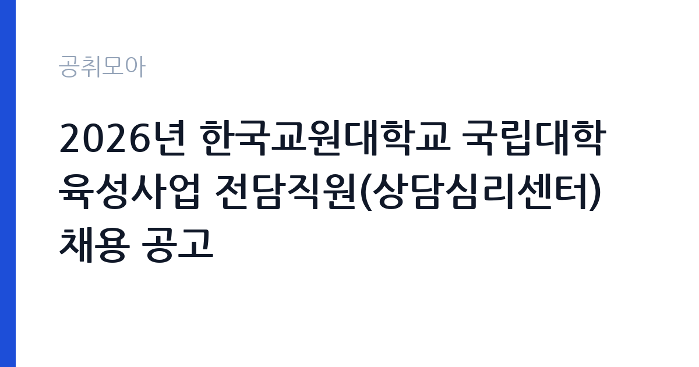

[국가기관] 2026년 한국교원대학교 국립대학 육성사업 전담직원(상담심리센터) 채용 공고
한국교원대학교 · 충북 · 마감 2026-10-08 (D-14) · 출처 나라일터

한눈에 보는 모집 조건
| 기관 | 한국교원대학교 |
|---|---|
| 공고명 | 2026년 한국교원대학교 국립대학 육성사업 전담직원(상담심리센터) 채용 공고 |
| 고용형태 | 정규직 |
| 근무지 | 충북 |
| 게시일 | 2026-09-23 |
| 마감일 | 2026-10-08 (D-14) |
지원자격, 이렇게 읽으세요
- 연구원 1명
- 접수 ~2026-10-08 마감
- 세부 조건은 원문 공고문 확인
모집 직종이 연구원이고 근무 부서가 상담심리센터인 만큼, 상담심리나 임상심리, 교육심리 관련 학위나 자격을 요구할 가능성이 큽니다. 유사한 대학 상담센터 채용에서는 상담 관련 석사 이상 학위나 전문상담사, 상담심리사 자격증을 요구하는 경우가 많습니다. 정확한 응시 자격과 우대 조건은 원문 공고문에서 확인하셔야 합니다. 육성사업 전담직원은 사업비로 인건비를 지급하는 계약직 형태가 일반적이므로 계약 기간과 연장 조건도 함께 확인하시기 바랍니다. 경력증명서와 학위증명서, 자격증 사본을 미리 준비해 두시기 바랍니다.
이 공고의 포인트
이 공고의 매력은 세 가지입니다. 첫째, 전공과 직무가 정확히 일치하는 자리입니다. 상담심리를 전공하고도 마땅한 일자리를 찾지 못한 분께는 전공을 살릴 수 있는 기회입니다. 둘째, 국립대학 소속 경력을 쌓을 수 있습니다. 국립대학 육성사업 실무 경험은 이후 대학 상담센터나 공공기관 상담직 지원 때 경력으로 인정받습니다. 셋째, 교원양성 특성화 대학이라는 환경입니다. 예비 교원을 대상으로 한 상담과 심리지원 경험은 교육상담 분야의 전문성을 키우는 데 도움이 됩니다. 모집 인원이 1명이라 경쟁이 있을 수 있으니 서류를 탄탄히 준비하시기 바랍니다.
전형은 어떻게 진행되나
대학 전담직원 채용은 보통 서류심사와 면접으로 진행됩니다. 서류에서는 학위와 자격증, 상담 관련 경력을 심사하고, 면접에서는 상담 역량과 학생 응대 태도를 평가합니다. 상담센터 채용 면접에서는 모의 상담 시연이나 사례 개념화 질문이 나올 수 있으니 대표 사례를 정리해 가시기 바랍니다. 접수 마감은 10월 8일로, 제출 서류에 자기소개서와 직무수행계획서가 포함되는지 원문에서 확인하시기 바랍니다. 면접에서는 비밀보장과 윤리 의식을 묻는 경우가 많으니 상담윤리 강령을 숙지해 두시기 바랍니다.
이런 분께 추천해요
- 상담심리나 임상심리, 교육심리를 전공하고 관련 자격증을 보유한 분께 추천합니다.
- 대학 상담센터나 청소년 상담 현장 경험을 쌓고 싶은 분께 잘 맞습니다.
- 청주와 충북권에 거주하시거나 근무가 가능한 분께 좋은 기회입니다.
지원 전 체크리스트
- 응시자격에 적힌 학위와 자격증 요건을 충족하는지 확인했습니다.
- 경력증명서와 자격증 사본 등 제출 서류를 빠짐없이 준비했습니다.
- 접수 방법과 마감 시각을 확인하고 여유 있게 접수했습니다.
- 모의 상담 사례와 상담윤리 내용을 정리해 면접을 대비했습니다.
모집 일정과 제출 타이밍
원서 접수 마감은 2026년 10월 8일입니다. 대학 채용은 접수 기간이 짧은 경우가 많으니 마감일을 넘기지 않도록 주의하시기 바랍니다. 서류 합격자 발표와 면접 일정은 원문 공고문에 안내되어 있습니다. 면접까지 2주 정도 간격이 나는 경우가 많으므로 접수와 동시에 면접 준비를 시작하시기 바랍니다. 육성사업 일정에 따라 근무 시작 시기가 정해지므로 합격 안내문의 임용 조건을 꼼꼼히 확인하시기 바랍니다.
직무 이해하기: 국가기관
국립대학 육성사업 전담직원은 사업계획의 집행과 성과관리를 실무에서 담당합니다. 상담심리센터 소속으로는 학생 개인상담과 집단상담, 심리검사 실시와 해석, 상담 프로그램 기획과 운영, 위기 학생 지원과 의뢰 연계를 맡습니다. 교원대학교는 예비 교원이 다수인 만큼 진로와 학업 스트레스, 대인관계 상담 수요가 많은 편입니다. 사업비로 운영되는 한시 사업의 성격이 있으므로 계약 기간과 사업 종료 시점을 원문에서 반드시 확인하시기 바랍니다. 상담 기록 관리와 비밀보장이 업무의 기본입니다.
자기소개서 작성 팁
상담센터 지원 서류의 핵심은 상담 철학과 현장 경험입니다. 어떤 이론적 배경으로 내담자를 만나는지 본인 언어로 정리해 보여주시기 바랍니다. 실습이나 인턴에서 만났던 사례를 비밀보장 범위에서 풀어쓰되, 개입 과정과 성과를 구체적으로 쓰시기 바랍니다. 집단상담이나 심리검사, 아웃리치 프로그램 경험이 있다면 반드시 넣으시기 바랍니다. 교원양성 대학의 특성을 이해하고 있다는 점을 드러내면 좋은 평가를 받습니다.
면접 준비 포인트
면접에서는 상담 역량과 윤리 의식을 중점적으로 봅니다. 모의 상담 시연이 있다면 경청과 공감, 구조화 같은 기본기를 보여주시기 바랍니다. 위기 내담자나 자해, 학대 의심 사례를 만났을 때의 대처 절차를 묻는 경우가 많으니 매뉴얼을 숙지해 가시기 바랍니다. 비밀보장의 한계와 의무보고 상황을 명확히 답할 수 있어야 합니다. 사업단 업무 특성상 행정 처리와 보고서 작성 능력도 함께 평가받을 수 있으니 문서 작업 경험도 정리해 두시기 바랍니다.
급여·근무조건 읽는 법
이번 공고문 요약에는 보수 조건이 별도로 적시되어 있지 않아 정확한 연봉액은 원문 공고문 붙임 파일에서 확인하셔야 합니다. 국립대학 육성사업 전담직원의 보수는 사업비 인건비 기준에 따라 책정되는 경우가 많으며, 학위와 경력에 따라 차등을 두는 구조가 일반적입니다. 원문에서 확인하실 항목은 월 보수액과 4대 보험, 퇴직금, 계약 기간과 연장 조건입니다. 한국교원대학교는 알리오 경영공시 대상 기관이므로 공시된 직원 평균보수를 참고하실 수 있지만, 사업단 계약직 보수는 정규직 평균과 다를 수 있어 원문 확인이 우선입니다. 경쟁률과 합격선은 공개되지 않았습니다.
자주 묻는 질문
- 어떤 자격증이 필요합니까?
상담 관련 학위나 전문상담사, 상담심리사 같은 자격을 요구할 가능성이 큽니다. 정확한 응시 자격과 우대 조건은 원문 공고문에서 확인하시기 바랍니다. - 계약직입니까?
육성사업 전담직원은 사업비로 인건비를 지급하는 계약 형태가 일반적입니다. 계약 기간과 연장 가능 여부는 원문 공고문에서 확인하시기 바랍니다. - 상담 경력이 없어도 지원할 수 있습니까?
응시자격만 충족하면 지원할 수 있습니다. 다만 실무형 면접이 나올 수 있으니 실습 경험을 정리하고 상담윤리를 숙지해 두시기 바랍니다.
함께 보면 좋은 공고
[국가기관] 2026년 제5차 제주대학교 글로컬대학사업 선임연구원 및 연구원 채용 공고 — 마감 2026-10-02[국가기관] 과학기술정보통신부 전문임기제 다급(과학기술 인력양성) 경력경쟁채용시험 재공고 취소 공고 — 마감 2026-10-02[국가기관] 대구교육대학교 국가공무원(사서서기보) 경력경쟁채용 공고 — 마감 2026-10-09출처: 나라일터 공개정보를 바탕으로 공취모아가 정리한 안내글입니다. 모집 조건·일정은 변경될 수 있으니 지원 전 반드시 원문 공고문을 확인하세요. 본 글은 정보 제공용이며 합격을 보장하지 않습니다.